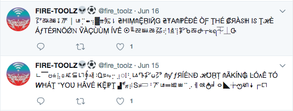
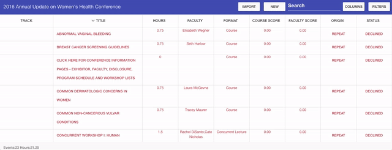
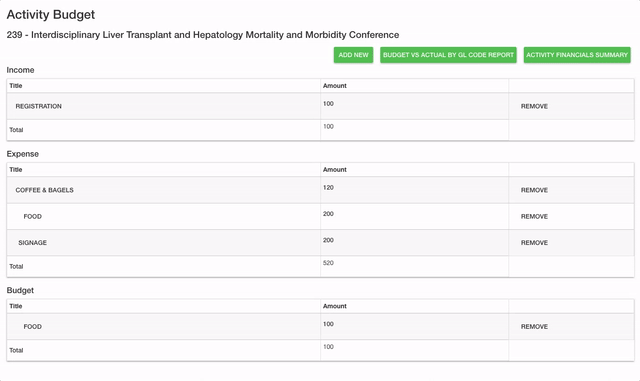
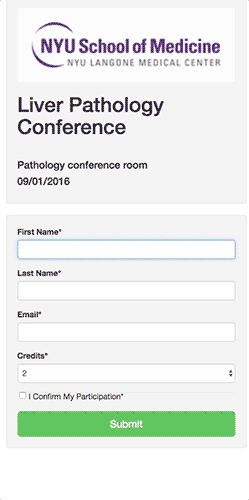
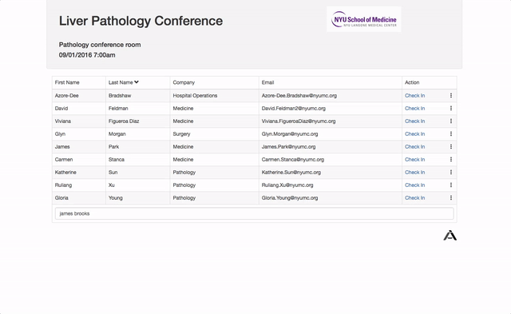
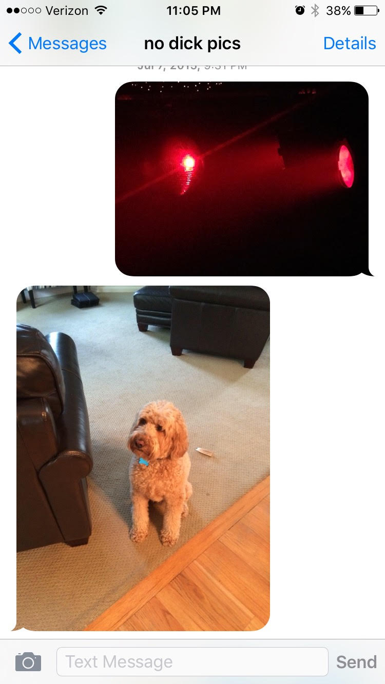
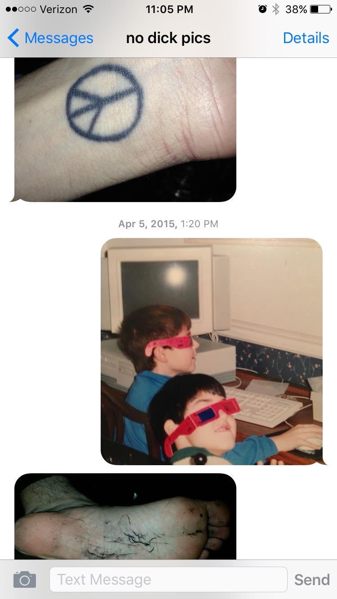
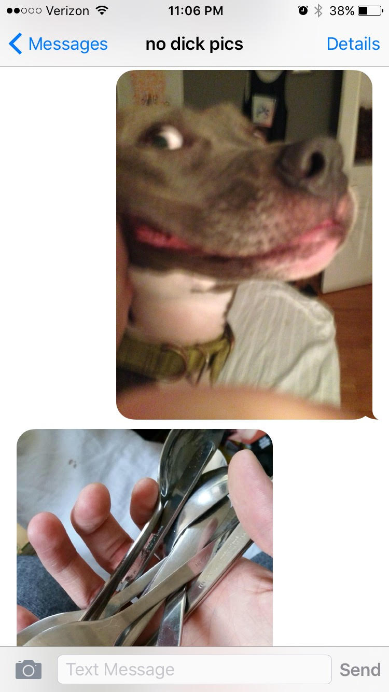

A twitter bot that tweets once a day for musical project Fire-Toolz. The bot generates tweets based on a markov chain based of lyrics, and replaces with stylzed unicode characters. (es6, mongodb) github 
A web application I developed to manage submission data for large events. Based on information in the data set provided, the columns can be dynamically hidden, displayed, and filtered. Preferences are also saved using cookies. The application shows different information to different users based on permission levels. Developed for the American College of Emergency Physicians. ( ColdFusion & Angular 1)
I coded a new module for my company's software that allows administrators to easily add, modify, and remove budget and expense details for events they are planning. This information is later consumed by reports. Developed for New York University. ( ColdFusion & Angular 1)
Two small web applications I developed for managing attendance. One allows attendees to easily 'check-in' on their computer or mobile device. The other allows administrators to view the expected roster, and check in the attendees who are present. Administrators can also remove users, edit the amount of credit they will receive, and add new users to the roster. Developed for Washington University, University of Vermont, New York University & several other clients. ( ColdFusion & Angular 1)
 I have coded many websites for annual conferences, organizations, events, and companies. In some cases, I designed the website entirely myself. In others, I was working off of a design provided by the client.
A telephone number that when texted an image will respond with the last image another user sent in. It was messaged several thousand times by over 100 different people. (Javascript & Node & Twilio)
  I have produce a body of animated sketches using Cinema 4D, After Effects, & Photoshop. I have been shown in several small gallery shows, I am a GIPHY featured artist. I have performed live projections in collaboration with artists such as Signe Pierce and Jónó Mí Ló.